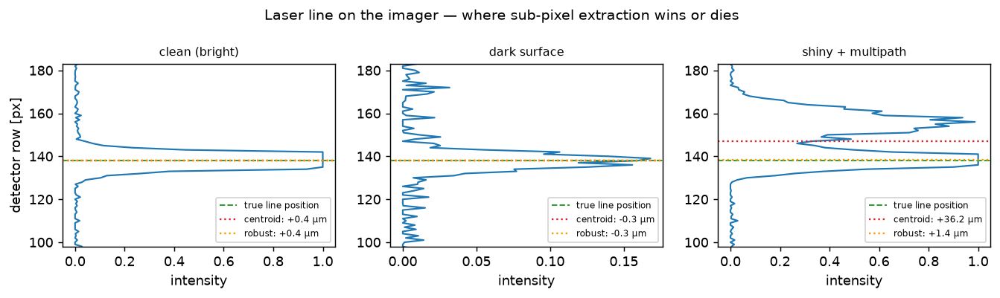
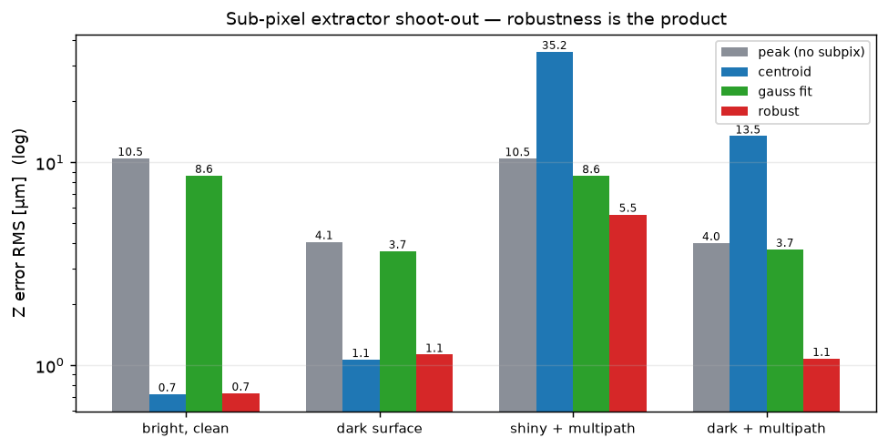
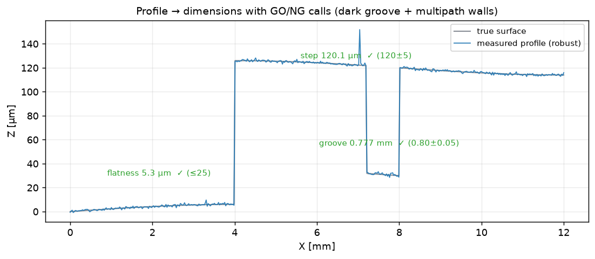
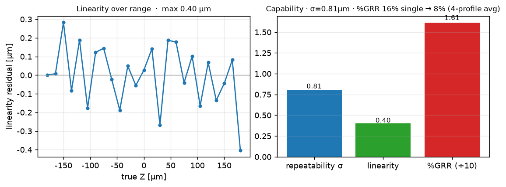
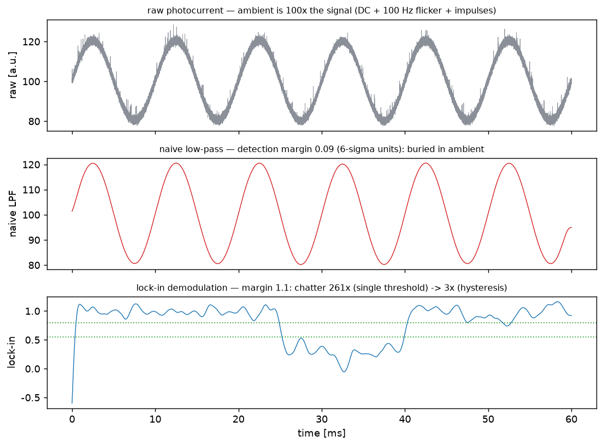
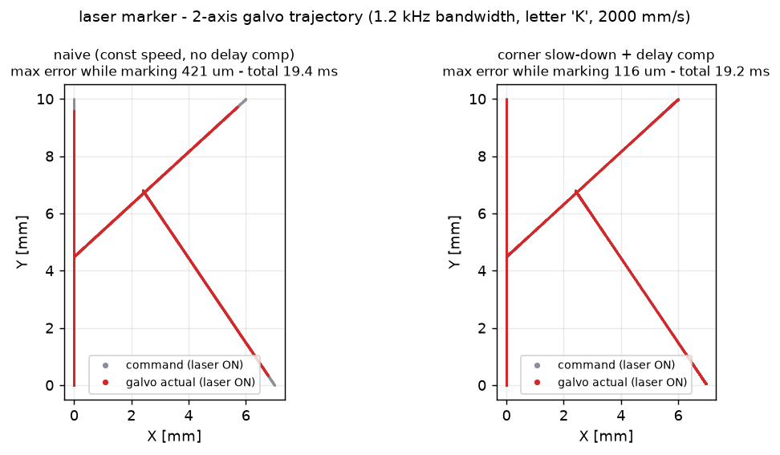
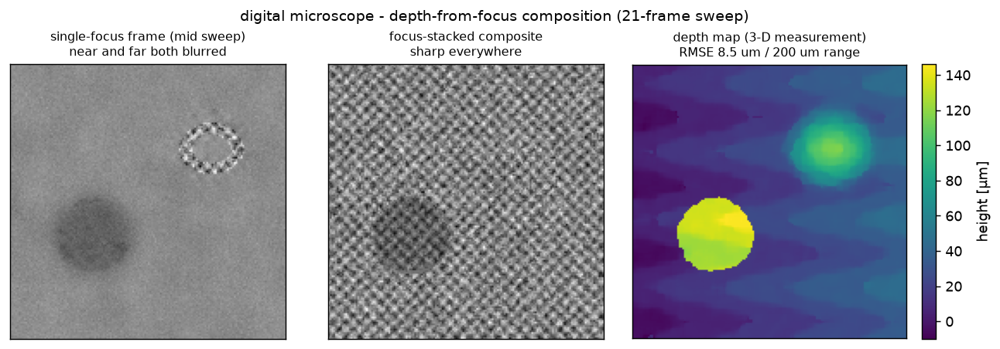

2Dレーザープロファイラ（LJ-X級）のセンサ内部の信号処理チェーンを実装。CMOS上のレーザーライン撮像（スペックル・反射率変動・多重反射・画素飽和）を物理シミュレーションし、サブピクセル抽出アルゴリズム4種を比較、プロファイルから寸法（段差/溝幅/角度/平面度）を公差判定つきで計測、最後に計測能力（繰返し性σ・直線性・%GRR）で締める——計測センサの商品開発がやる仕事の縮図。
405nmラインレーザーの像を、ラインスプレッド＋スペックル＋読み出しノイズ＋画素飽和で生成。テカリ面では壁の二次反射（多重反射）が偽ローブを作る——三角測量センサの古典的な破綻モード。重心法は偽ローブに引っ張られ、ロバスト法は正しいローブに残る様子がそのまま見える。

単純ピーク／しきい値重心／ガウスフィット／ロバスト法（自作）を4条件×400試行で比較。ロバスト法の鍵は物理：多重反射は光路が長いので必ず＋行側に落ちる→「エネルギー最大」ではなく「有力ローブのうち最短光路（最小行）」を選ぶ。飽和プラトーは対称なので、しきい値重心（裾がサブピクセル情報を持つ）で不偏に読める。開発過程では実際に「エネルギー最大」実装が最悪条件で65µm誤差を出し、この物理ルールへの置換で12×改善した——図が欠陥を暴き、物理が直した実例。

結果：ロバスト法は全条件で最良か同着——bright 0.73 / dark 1.13 / shiny+MP 5.5（重心 35.2）/ dark+MP 1.08（重心 13.5）µm RMS。
基準ワーク（平面＋120µm段差＋幅0.8mm・深さ90µmの溝）を、溝内は暗く（反射率0.25）壁際は多重反射つきという意地悪条件でスキャン。ロバスト抽出のプロファイルから段差高さ・溝幅（半深さ交差）・肩角度・平面度（最良直線除去後）を計測し、公差でGO/NG判定。

段差 120.1 µm ✓（120±5）／溝幅 0.777 mm ✓（0.80±0.05）／平面度 5.3 µm ✓（≤25）。プロファイル全体RMS 1.55 µm。
計測器は「測れる」だけでは商品にならない——能力を数値で保証して初めて売れる。繰返し性σ（60回）、レンジ全域の直線性残差、公差±15µmに対する%GRR（6σ規約）を評価。単発では16%（AIAG条件付き）、実機同様の4プロファイル平均で7.8%＝合格（<10%）。

アルゴリズムはPythonで証明し、製品にはC++で載せる。ロバスト抽出器をC++17に移植（アロケーションなし・1パスのローブ走査）し、精度パリティを確認（bright 0.71µm／dark+多重反射 1.12µm RMS＝Python版と一致）した上で、200万列で実測：636.4 ns/列 → 1.57M列/秒 → 3200点プロファイルで毎秒491本。シングルコア・-O3のみ（SIMD組込み・マルチコア未使用）なので、コア数分の線形スケールとFPGA/SIMD化の伸び代を残した"正直な下限値"。数値は lj_fast_results.json の実測そのまま（計測ホスト: Intel(R) Xeon(R) Processor @ 2.80GHz、タイミングはホスト依存・入力は固定シードで決定的）。-Wall -Wextra 警告ゼロ。
出所：keyence/lj_fast.cpp（g++ -O3 -march=native、実測値は lj_fast_results.json）。
受光には信号の100倍の外乱光（直流＋100Hzフリッカ＋インパルス）が乗る。LED を100kHzで変調し、参照信号と掛けて低域通過（同期検波）することで外乱を帯域外へ追い出す——光電センサが太陽光の下で動く理由そのもの。検出余裕は単純LPFの 0.09 から 1.1（6σ単位）へ。さらにヒステリシス幅をノイズ6σより広く設計し、しきい値チャタを 261回 → 3回に。

帯域1.2kHzのガルバノで文字を2000mm/sでマーキング。等速コマンドではコーナーで実軌跡が膨らみ、マーキング中（レーザーON）最大誤差 421µm。コーナー減速（区間S字）＋トラッキング遅延補正で 116µm へ——タクトはほぼ同一（19.4→19.1ms）。ジャンプ（レーザーOFF）区間は評価から除外し、品質×タクトの実務指標で比較。

被写界深度12µmに対し高低差200µmのシーンを21枚のフォーカススイープで撮像し、画素ごとに最鋭フレームを選択（局所ラプラシアン鮮鋭度）→全焦点画像を合成。さらに鮮鋭度ピークの放物線フィットでサブステップの深度マップ（3D計測）を推定——RMSE 8.48µm。VHXの看板機能「リアルタイム深度合成＋3D測定」の中身。
